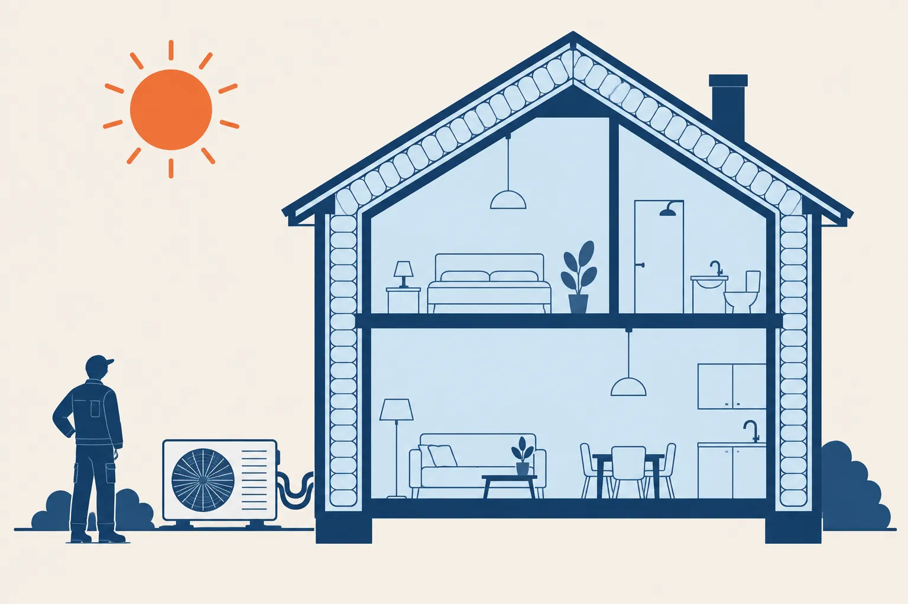
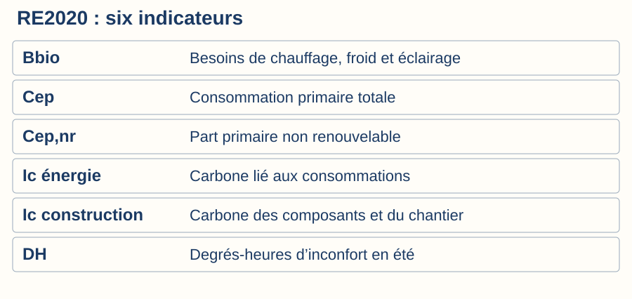
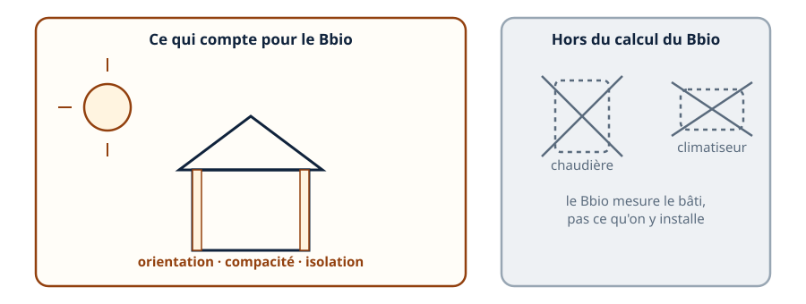
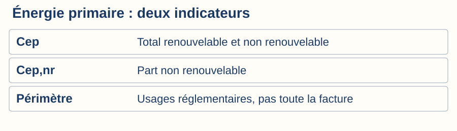
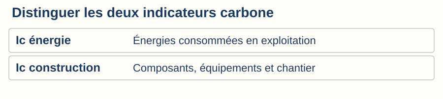
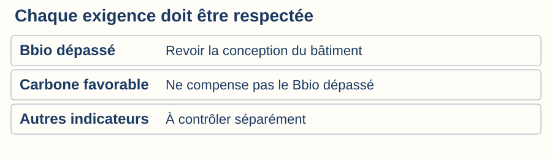
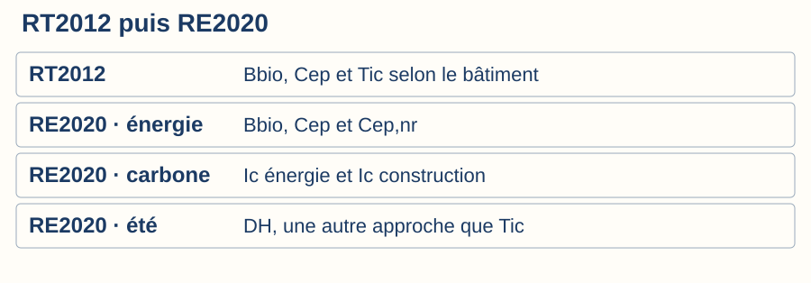
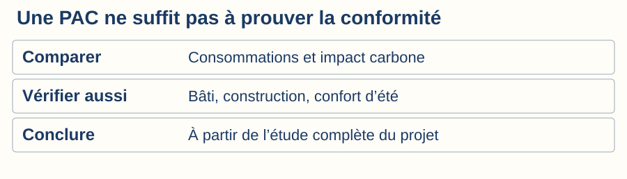

Mini-station commentée · 8 écrans et 4 questions · environ 10 minutes

Objectif
À la fin de la station, vous savez nommer et distinguer les six indicateurs de la RE2020, dire pourquoi elles se contrôlent ensemble sans compensation, et expliquer pourquoi l'impact carbone pousse le choix vers la pompe à chaleur.
Chaque écran peut être expliqué à voix haute : le bouton « Écouter » commente ce que vous voyez. Rien n'est dit qui ne soit aussi écrit.
1 / 12
Écran 1 sur 8
Six indicateurs, trois thèmes
Énergie, carbone et confort d’été : trois thèmes, mais six indicateurs réglementaires. Bbio, Cep, Cep,nr, Ic énergie, Ic construction et DH ont chacun leur rôle. Un bon résultat ne compense pas un dépassement ailleurs.

Six indicateurs, trois thèmes
Écran 2 sur 8
Bbio : agir sur les besoins
Le Bbio traduit les besoins de chauffage, de refroidissement et d’éclairage liés à la conception du bâtiment. Orientation, isolation et protections solaires comptent. Changer seulement le générateur ne corrige pas un Bbio dépassé, à conditions d’étude identiques.

Bbio : agir sur les besoins
Écran 3 sur 8
Cep et Cep,nr : deux lectures de l’énergie
Cep porte sur l’énergie primaire totale ; Cep,nr sur sa part non renouvelable. Le périmètre réglementaire comprend chauffage, froid, eau chaude, éclairage et auxiliaires, et selon le bâtiment certains usages des parkings, circulations et déplacements internes. Ce n’est pas toute la facture électrique.

Cep et Cep,nr : deux lectures de l’énergie
Écran 4 sur 8
Deux indicateurs carbone
Ic énergie concerne les consommations pendant l’exploitation. Ic construction concerne les composants, équipements et travaux de construction sur leur cycle de vie. Une fiche matériau et un choix d’énergie ne renseignent donc pas le même indicateur.

Deux indicateurs carbone
Écran 5 sur 8
Vérifier chaque exigence
L’étude compare séparément les résultats aux limites applicables au projet. Un Bbio dépassé reste à corriger même si le carbone est favorable. Les seuils dépendent du contexte réglementaire : ne recopiez pas une valeur d’un autre bâtiment.

Vérifier chaque exigence
Écran 6 sur 8
La RT2012 avait déjà un confort d’été
La RT2012 comportait Bbio, Cep et, pour les bâtiments concernés, Tic. La RE2020 introduit notamment les indicateurs carbone, Cep,nr et les degrés-heures DH. DH remplace l’approche Tic : le confort d’été n’apparaît pas pour la première fois.

La RT2012 avait déjà un confort d’été
Écran 7 sur 8
Comparer des solutions, puis calculer
Le chauffage choisi agit sur les consommations et leur impact carbone. Une PAC peut améliorer ces résultats ; sa présence ne prouve jamais à elle seule la conformité du projet. Il faut aussi traiter le bâti, la construction et l’inconfort d’été.

Comparer des solutions, puis calculer
Écran 8 sur 8
Le réflexe du technicien d’études
Identifiez l’usage du bâtiment et la date du projet. Relevez les six indicateurs dans l’étude et vérifiez leurs exigences respectives. Justifiez les modifications proposées. Les questions ci-dessous vérifient les notions ; seule votre production argumentée montre comment vous les utilisez.
Le réflexe du technicien d’études
Question 1 sur 4
Que mesure le Bbio ?
Rappel de l'écran 2 — le bâti seul, sans les équipements.
Question 2 sur 4
Le Cep additionne quels usages d'énergie ?
Rappel de l'écran 3 — les usages réglementaires, pas toute la facture.
Question 3 sur 4
Excellent sur l’indicateur carbone, mais Bbio dépassé : le projet passe-t-il ?
Rappel de l'écran 5 — pas de compensation entre les exigences.
Question 4 sur 4
Pourquoi l’indicateur carbone pousse-t-il vers la pompe à chaleur ?
Rappel de l'écran 7 — le choix de l'équipement change le résultat sur l’indicateur carbone.
Les correspondances de la station
Pourquoi une RT ? (même sous-ligne)
— l'histoire qui mène à la RE2020, et ce que la RT2012 mesurait déjà.
Le confort d'été (même sous-ligne)
— le détail du volet DH, seulement annoncé ici à l'écran 6.
ACV & carbone (sous-ligne Impact environnemental)
— l'indicateur IC de la RE2020 est de l'analyse de cycle de vie.
Les trois stations sont ouvertes : les liens fonctionnent.